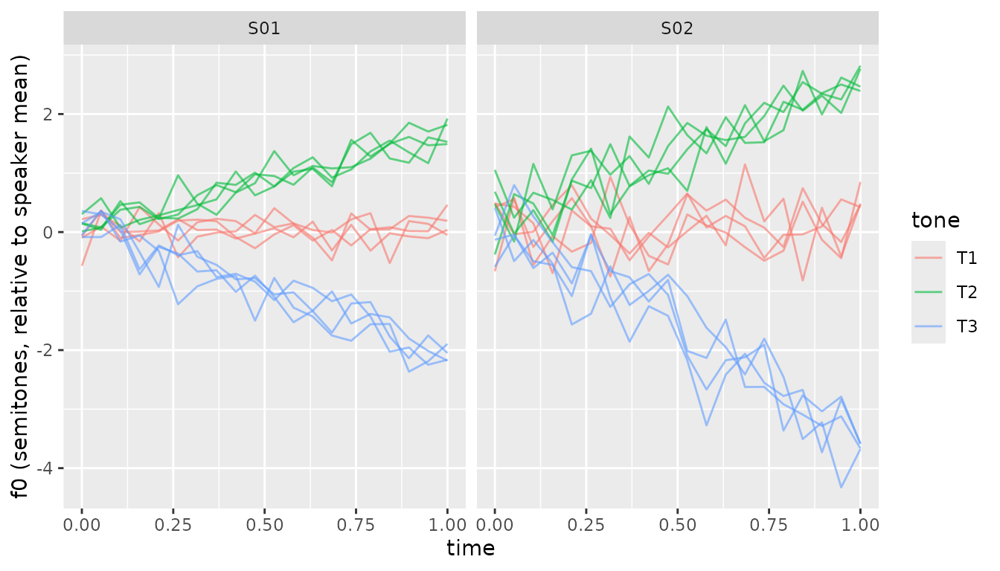

What is shinytone?
shinytone is a research hub for citation tone analysis in tone languages. It bundles:
- An interactive Shiny app that walks you through the full workflow — pitch extraction, by-speaker f0 normalisation, outlier detection, growth-curve and generalised additive mixed models, and Chao tone numeral summarisation.
- A small set of pure R functions that implement the analytical core, so you can run the same analyses scripted from RMarkdown or another package.
This vignette walks through the scripted side using the package’s
bundled sample dataset. If you prefer a graphical workflow, run
shinytone::run_app() after installing, or visit the hosted
app at https://chenzixu.shinyapps.io/shinytone/.
The bundled sample_f0 dataset
shinytone ships with a real citation-tone corpus available
immediately after library(shinytone). It contains 38,808 f0
samples from 1,848 tokens across 13 speakers.
data(sample_f0)
glimpse(sample_f0)
#> Rows: 38,808
#> Columns: 12
#> $ token <chr> "dc102椅1s10.0125", "dc102椅1s10.0125", "dc102椅1s10.0125", "d…
#> $ index <int> 1, 2, 3, 4, 5, 6, 7, 8, 9, 10, 11, 12, 13, 14, 15, 16, 17, …
#> $ time <dbl> 0.090, 0.105, 0.120, 0.135, 0.150, 0.165, 0.180, 0.195, 0.2…
#> $ f0_Hz <dbl> 245.7078, 246.4516, 247.5111, 248.5496, 249.7015, 251.6647,…
#> $ intensity <dbl> 69.39095, 71.51177, 72.51483, 72.93342, 73.17195, 73.41046,…
#> $ speaker <chr> "dc102", "dc102", "dc102", "dc102", "dc102", "dc102", "dc10…
#> $ char <chr> "椅", "椅", "椅", "椅", "椅", "椅", "椅", "椅", "椅", "椅", "椅", "椅",…
#> $ position <int> 1, 1, 1, 1, 1, 1, 1, 1, 1, 1, 1, 1, 1, 1, 1, 1, 1, 1, 1, 1,…
#> $ start_time <dbl> 10.0125, 10.0125, 10.0125, 10.0125, 10.0125, 10.0125, 10.01…
#> $ tone <int> 3, 3, 3, 3, 3, 3, 3, 3, 3, 3, 3, 3, 3, 3, 3, 3, 3, 3, 3, 3,…
#> $ ipa <chr> "i", "i", "i", "i", "i", "i", "i", "i", "i", "i", "i", "i",…
#> $ vowel <chr> "i", "i", "i", "i", "i", "i", "i", "i", "i", "i", "i", "i",…The columns we’ll use:
-
token— unique identifier for each recorded syllable (groups rows of the same contour together) -
time— time in seconds within each token -
f0_Hz— fundamental frequency -
speaker— speaker ID -
tone— Chao tone category (1-5) -
char— the Chinese character of the syllable
See ?sample_f0 for the full schema and source
citation.
Normalise f0 by speaker
Raw Hz isn’t comparable across speakers (men and women have very
different baseline f0). normalise_f0() adds a
speaker_mean column plus either f0_st
(semitones, default) or f0_zscore, computed per
speaker:
normed <- normalise_f0(sample_f0,
f0 = "f0_Hz",
speaker = "speaker",
tone = "tone",
method = "semitone",
mean_method = "weighted")
head(normed[, c("speaker", "tone", "f0_Hz", "speaker_mean", "f0_st")])
#> speaker tone f0_Hz speaker_mean f0_st
#> 1 dc102 3 245.7078 237.0675 0.6197450
#> 2 dc102 3 246.4516 237.0675 0.6720735
#> 3 dc102 3 247.5111 237.0675 0.7463436
#> 4 dc102 3 248.5496 237.0675 0.8188289
#> 5 dc102 3 249.7015 237.0675 0.8988754
#> 6 dc102 3 251.6647 237.0675 1.0344568Now f0_st puts every speaker on a comparable scale. To
plot the mean contour per tone, use [compute_mean_contour()], which
normalises time to [0, 1] within each token before
averaging. The package function returns its result in the same
time / f0_predicted / tone schema used by [predict_gca()]
and [predict_gamm()]:
mean_contour <- compute_mean_contour(normed,
token = "token", f0 = "f0_st",
time = "time", tone = "tone")
ggplot(mean_contour, aes(time, f0_predicted, colour = factor(tone))) +
geom_line(linewidth = 1) +
labs(x = "Normalised time", y = "f0 (semitones)", colour = "Tone")
Inspect for outliers and pitch-tracking artefacts
inspect_f0() runs three complementary checks: tokens
whose per-token max or min sits more than z_threshold SDs
from the speaker’s mean (extreme-value), tokens whose median is unusual
for their speaker and tone (token-level), and individual samples where
the rate of f0 change exceeds physiological plausibility (sample-level;
Sundberg 1973, Steffman & Cole 2022).
inspected <- inspect_f0(sample_f0,
f0 = "f0_Hz",
token = "token",
time = "time",
speaker = "speaker",
tone = "tone")
# How many tokens were flagged overall?
inspected |>
distinct(token, .keep_all = TRUE) |>
count(flagged_token)
#> # A tibble: 2 × 2
#> flagged_token n
#> <lgl> <int>
#> 1 FALSE 1586
#> 2 TRUE 262The flag_notes column gives a human-readable reason for
each flagged sample (e.g., "max too high; jump (rise)"). On
the live app, the Inspect tab lets you click through flagged tokens one
by one.
Fit token-level polynomials
fit_polynomial() returns one row per token with Legendre
polynomial coefficients (c0, c1,
c2, …). Useful as features for downstream classifiers, or
as a compact summary of contour shape.
poly_coefs <- fit_polynomial(normed,
f0 = "f0_st",
token = "token",
time = "time",
speaker = "speaker",
tone = "tone",
degree = 2)
head(poly_coefs)
#> # A tibble: 6 × 6
#> token speaker tone c0 c1 c2
#> <chr> <chr> <int> <dbl> <dbl> <dbl>
#> 1 dc102一1s22.3525 dc102 6 -1.53 3.86 0.114
#> 2 dc102一2s22.9425 dc102 6 -1.07 2.62 0.282
#> 3 dc102一3s23.5725 dc102 6 -1.37 2.79 0.474
#> 4 dc102一4s24.1425 dc102 6 -1.14 1.76 0.732
#> 5 dc102一5s24.7925 dc102 6 -1.09 1.90 0.296
#> 6 dc102一6s25.3125 dc102 6 -1.87 2.14 1.28Interpretation:
-
c0≈ token-level mean f0 (in semitones, relative to speaker mean) -
c1≈ linear slope across the contour (positive = rising) -
c2≈ curvature (positive = U-shaped, negative = inverted-U)
Fit a Growth Curve Analysis (GCA)
fit_gca() is a convenience wrapper around
lme4::lmer() with sensible defaults for tone-shape
modelling — orthogonal polynomials on per-token normalised time, plus
conventional random effects on speaker and item. For non-standard model
structures, call lme4::lmer() directly.
# (Skipped on package build for speed; uncomment to run locally.)
gca <- fit_gca(normed,
f0 = "f0_st",
time = "time",
token = "token",
tone = "tone",
speaker = "speaker",
item = "char", # use Chinese char as item
degree = 2,
random_slope_speaker = FALSE,
random_slope_item = FALSE)
# Population-level per-tone curves
preds <- predict_gca(gca, n = 100)
ggplot(preds, aes(time, f0_predicted, colour = tone)) +
geom_line(linewidth = 1)Convert to Chao tone numerals
contour_to_chao() reduces per-tone mean (or
model-predicted) contours into Chao numerals — 5-level digit strings
like 55, 35, or 214.
# Pre-aggregate into a per-tone mean contour over all speakers
mean_contour <- compute_mean_contour(sample_f0,
token = "token", f0 = "f0_Hz",
time = "time", tone = "tone")
chao <- contour_to_chao(
mean_contour,
raw_data = sample_f0,
raw_token = "token", raw_f0 = "f0_Hz", raw_tone = "tone"
)
chao[, c("tone", "refline", "interval", "robust", "shape")]
#> tone refline interval robust shape
#> 1 1 22 22 33 mid-low level
#> 2 2 212 111 222 dipping
#> 3 3 32 32 33 falling
#> 4 4 45 45 44 rising
#> 5 5 22 21 32 mid-low level
#> 6 6 23 13 23 risingThree conversion methods in one pass:
-
refline— reference-line FOR, rounded on the[1, 5]scale -
interval— interval-based FOR, ceiling on the(0, 5]scale -
robust— robust FOR using μ ± σ of the highest- and lowest-tone extremes (requiresraw_data)
The shape column summarises the contour (“rising”,
“falling”, “dipping”, etc.) and is derived from the reference-line
numeral via classify_contour().
Where to go next
- Browse the function reference for the full API.
- Run
shinytone::run_app()locally for the full graphical workflow, including audio processing and a Praat script generator. - Cite the package with
citation("shinytone")in any work that uses it.
References
Steffman, J., & Cole, J. (2022). Pitch tracking artefacts and the detection of voicing errors in spontaneous speech.
Sundberg, J. (1973). The acoustics of the singing voice. Scientific American, 229(3), 82–91.
Xu, C. (2025). Plastic Mandarin tones: regional identity in prosody. Phonetica, 82(5), 331–362. https://doi.org/10.1515/phon-2025-0001
Xu, C., & Zhang, C. (2024). A cross-linguistic review of citation tone production studies: Methodology and recommendations. The Journal of the Acoustical Society of America, 156(4), 2538–2565. https://doi.org/10.1121/10.0032356